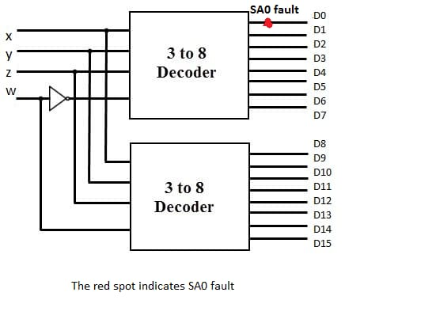

SA0 fault on output line
Please note: SA0 faults on other output lines will lead to similar cases, with some outputs always being low (stuck-at-0) and others as expected
SA0 fault on D0 output line

In this case, irrespective of the input, D0 is always low. If input is 0000, then output D0 is expected to be 1. But due to stuck-at-0 on line D0, output D0 is also low and hence no output is obtained. For all other inputs, the output obtained is the same as expected output.
The truth table for this case is given below: